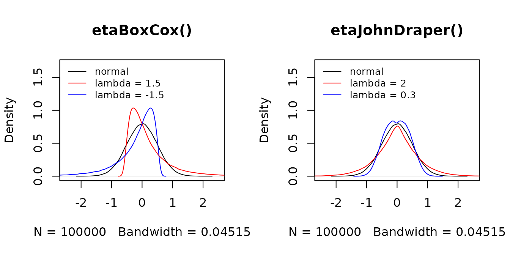
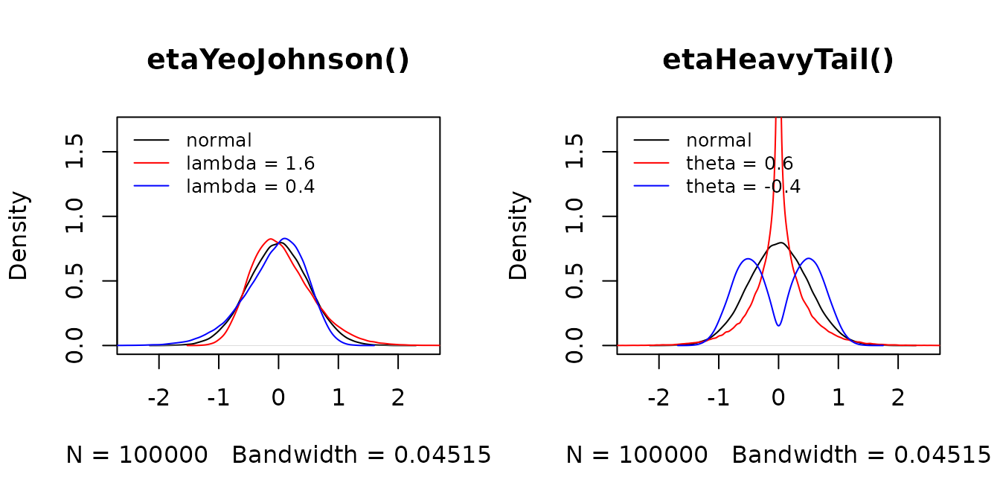
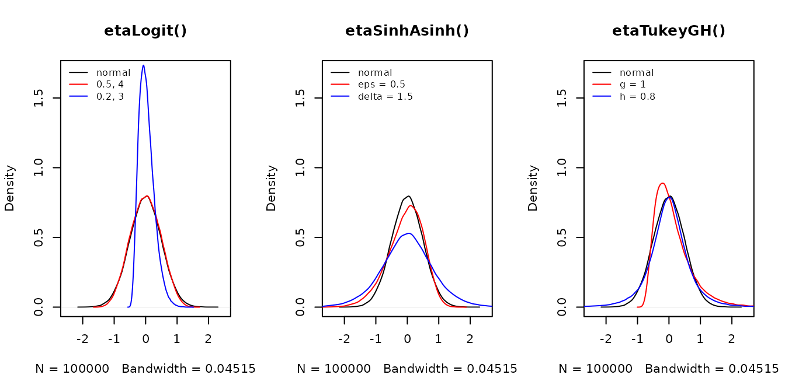
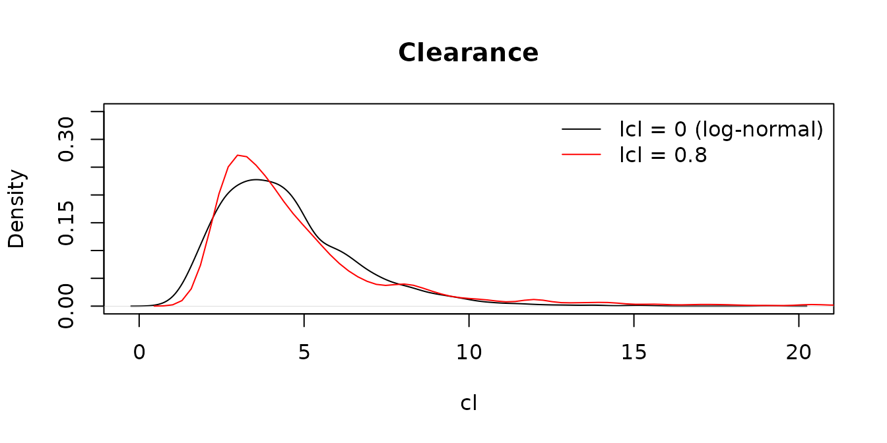

Skewed and heavy-tailed random effects
Source:vignettes/articles/rxode2-eta-shape-transforms.Rmd
rxode2-eta-shape-transforms.Rmd
library(rxode2)
#> rxode2 5.1.8.9000 using 2 threads (see ?getRxThreads)
#> no cache: create with `rxCreateCache()`Overview
A random effect eta is normal, so
cl <- tcl*exp(eta.cl) gives a log-normal clearance. When
the population is skewed or heavy tailed, a shape transform with an
estimated shape parameter can replace eta (Petersson et
al. 2009):
Every transform here keeps eta = 0 at 0 (so
tcl is still the typical value), keeps the rank order of
eta (so correlations between random effects are roughly
kept), and has a shape value giving the identity (so the shape can be
tested with a likelihood ratio test).
| Function | Transform | Identity at | Changes |
|---|---|---|---|
etaBoxCox(eta, lambda) |
(exp(eta)^lambda - 1)/lambda |
lambda = 0 |
skewness |
etaJohnDraper(eta, lambda) |
sign(eta)*((abs(eta) + 1)^lambda - 1)/lambda |
lambda = 1 |
tails |
etaYeoJohnson(eta, lambda) |
((eta + 1)^lambda - 1)/lambda for
eta >= 0,
-((1 - eta)^(2 - lambda) - 1)/(2 - lambda) below |
lambda = 1 |
skewness |
etaHeavyTail(eta, theta) |
eta*abs(eta)^theta |
theta = 0 |
tails (bimodal for theta < 0) |
etaLogit(eta, theta1, theta2) |
(expit(logit(theta1) + eta) - theta1)*theta2 |
near it at theta1 = 0.5, theta2 = 4
|
skewness, width (bounded) |
etaSinhAsinh(eta, eps, delta) |
sinh(delta*asinh(eta) - eps) + sinh(eps) |
eps = 0, delta = 1
|
skewness and tails |
etaTukeyGH(eta, g, h) |
(exp(g*eta) - 1)/g*exp(h*eta^2/2) |
g = 0, h = 0
|
skewness and tails |
The transforms in R
Each transform is a C function in the model language, and the R function of the same name runs that C code, so you can see what a transform does before putting it in a model:
etaBoxCox(c(-1, 0, 1), 0.5)
#> [1] -0.7869387 0.0000000 1.2974425
etaBoxCox(c(-1, 0, 1), 0) # the identity
#> [1] -1 0 1
etaJohnDraper(c(-1, 0, 1), 1) # the identity
#> [1] -1 0 1Applied to normal draws they show the shapes they produce:
set.seed(42)
eta <- rnorm(1e5, sd = 0.5)
oldPar <- par(mfrow = c(1, 2))
plot(density(eta), main = "etaBoxCox()", xlim = c(-2.5, 2.5), ylim = c(0, 1.7))
lines(density(etaBoxCox(eta, 1.5)), col = "red")
lines(density(etaBoxCox(eta, -1.5)), col = "blue")
legend("topleft", c("normal", "lambda = 1.5", "lambda = -1.5"),
col = c("black", "red", "blue"), lty = 1, bty = "n", cex = 0.8
)
plot(density(eta), main = "etaJohnDraper()", xlim = c(-2.5, 2.5), ylim = c(0, 1.7))
lines(density(etaJohnDraper(eta, 2)), col = "red")
lines(density(etaJohnDraper(eta, 0.3)), col = "blue")
legend("topleft", c("normal", "lambda = 2", "lambda = 0.3"),
col = c("black", "red", "blue"), lty = 1, bty = "n", cex = 0.8
)
par(oldPar)
oldPar <- par(mfrow = c(1, 2))
plot(density(eta), main = "etaYeoJohnson()", xlim = c(-2.5, 2.5), ylim = c(0, 1.7))
lines(density(etaYeoJohnson(eta, 1.6)), col = "red")
lines(density(etaYeoJohnson(eta, 0.4)), col = "blue")
legend("topleft", c("normal", "lambda = 1.6", "lambda = 0.4"),
col = c("black", "red", "blue"), lty = 1, bty = "n", cex = 0.8
)
plot(density(eta), main = "etaHeavyTail()", xlim = c(-2.5, 2.5), ylim = c(0, 1.7))
lines(density(etaHeavyTail(eta, 0.6)), col = "red")
lines(density(etaHeavyTail(eta, -0.4)), col = "blue")
legend("topleft", c("normal", "theta = 0.6", "theta = -0.4"),
col = c("black", "red", "blue"), lty = 1, bty = "n", cex = 0.8
)
par(oldPar)The two- and three-parameter transforms combine skewness with tails or bounds:
oldPar <- par(mfrow = c(1, 3))
plot(density(eta), main = "etaLogit()", xlim = c(-2.5, 2.5), ylim = c(0, 1.7))
lines(density(etaLogit(eta, 0.5, 4)), col = "red")
lines(density(etaLogit(eta, 0.2, 3)), col = "blue")
legend("topleft", c("normal", "0.5, 4", "0.2, 3"),
col = c("black", "red", "blue"), lty = 1, bty = "n", cex = 0.8
)
plot(density(eta), main = "etaSinhAsinh()", xlim = c(-2.5, 2.5), ylim = c(0, 1.7))
lines(density(etaSinhAsinh(eta, 0.5, 1)), col = "red")
lines(density(etaSinhAsinh(eta, 0, 1.5)), col = "blue")
legend("topleft", c("normal", "eps = 0.5", "delta = 1.5"),
col = c("black", "red", "blue"), lty = 1, bty = "n", cex = 0.8
)
plot(density(eta), main = "etaTukeyGH()", xlim = c(-2.5, 2.5), ylim = c(0, 1.7))
lines(density(etaTukeyGH(eta, 1, 0)), col = "red")
lines(density(etaTukeyGH(eta, 0, 0.8)), col = "blue")
legend("topleft", c("normal", "g = 1", "h = 0.8"),
col = c("black", "red", "blue"), lty = 1, bty = "n", cex = 0.8
)
par(oldPar)The logit transform bounds the random effect to
(-theta1*theta2, (1 - theta1)*theta2), theta1
setting the skewness and theta2 the width. Sinh-arcsinh is
centered here so that eta = 0 stays at 0; eps
skews and delta > 1 gives heavier tails
(delta < 1 lighter). Tukey’s g skews like
Box-Cox and h >= 0 adds tail weight. The R functions for
these have defaults giving the identity (eps = 0,
delta = 1, g = 0, h = 0), and in
a model a missing argument takes that default, so
etaSinhAsinh(eta.cl, delta = d) expands to
etaSinhAsinh(eta.cl, 0, d).
Box-Cox skews: lambda > 0 gives a long right tail,
lambda < 0 a long left one. Yeo-Johnson also skews, the
other way round about its identity (lambda > 1 a long
right tail). John-Draper and heavy-tailed are symmetric:
lambda > 1 (John-Draper) or theta > 0
(heavy-tailed) widens the tails. lambda < 1 shortens
John-Draper’s tails, while theta < 0 makes the
heavy-tailed transform bimodal; bound theta below by 0 to
allow only heavier tails. A useful starting range is lambda
in about (-3, 3); theta must stay above -1 for
the transform to keep rank order.
Using them in a model
In a model the transforms take R-style arguments. A user-defined
function (rxUdfUi()) for each one matches the arguments by
name, the way R does, and expands the call into the positional native
model function, so the solve runs C code only:
mod <- function() {
ini({
tcl <- log(4)
lcl <- 0.8
tv <- log(10)
lv <- 1.5
eta.cl ~ 0.2
eta.v ~ 0.1
})
model({
cl <- exp(tcl + etaBoxCox(lambda = lcl, eta = eta.cl))
v <- exp(tv + etaJohnDraper(eta.v, lambda = lv))
d / dt(central) <- -cl / v * central
cp <- central / v
})
}
ui <- mod()
ui$lstExpr[1:2]
#> [[1]]
#> cl <- exp(tcl + etaBoxCox(eta.cl, lcl))
#>
#> [[2]]
#> v <- exp(tv + etaJohnDraper(eta.v, lv))The shape (lcl, lv) is an ordinary theta. A
shaped eta is not mu-referenced, since it no longer enters as
theta + eta:
ui$nonMuEtas
#> [1] "eta.cl" "eta.v"Simulating shows the skewed clearance next to the log-normal one:
ev <- et(amt = 100) |> et(seq(0, 24, by = 4))
s <- rxSolve(ui, ev, nSub = 2000, returnType = "data.frame")
s0 <- rxSolve(ui |> ini(lcl = 0), ev, nSub = 2000, returnType = "data.frame")
#> ℹ change initial estimate of `lcl` to `0`
cl <- s$cl[s$time == 0]
cl0 <- s0$cl[s0$time == 0]
plot(density(cl0), main = "Clearance", xlab = "cl", ylim = c(0, 0.35))
lines(density(cl), col = "red")
legend("topright", c("lcl = 0 (log-normal)", "lcl = 0.8"),
col = c("black", "red"), lty = 1, bty = "n"
)
Exact derivatives
Estimation needs derivatives with respect to both eta
and the shape. These are exact symbolic rules, written so that they stay
finite and accurate at the identity, where the textbook formula is
0/0. They are built on exprelD(z, n), the
n-th derivative of (exp(z) - 1)/z:
rxFromSE("Derivative(etaBoxCox(eta, lambda), lambda)")
#> [1] "(eta)^2*exprelD((lambda)*(eta),1)"
etaBoxCox(0.5, c(-1e-8, 0, 1e-8))
#> [1] 0.5 0.5 0.5
exprelD(0, 0:3)
#> [1] 1.0000000 0.5000000 0.3333333 0.2500000The derivatives of etaJohnDraper() and
etaYeoJohnson() with respect to eta are
written without sign(), so they are 1 at
eta = 0 rather than 0. etaHeavyTail()’s
derivatives use absPowLog(x, p, k), which is
abs(x)^p*log(abs(x))^k with its limit at
x = 0; its slope at eta = 0 is 0 for
theta > 0, so a random effect near 0 moves the parameter
little.